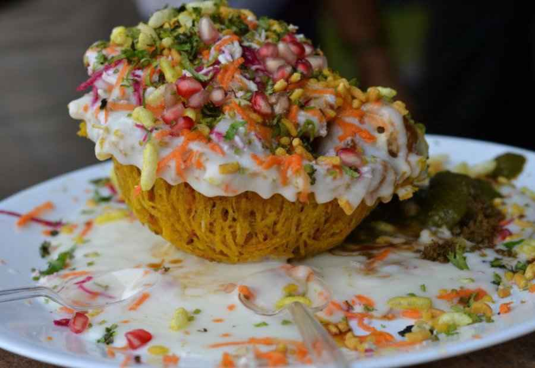

Lucknow: The City of Nawabs
Discover the timeless charm of Lucknow, where history, culture, and cuisine blend seamlessly.

Why Lucknow Captivates Hearts
1. Architectural Marvels
Bara Imambara's labyrinth (Bhool Bhulaiyaa) and Rumi Darwaza stand as testaments to 18th-century grandeur. These structures showcase Nawabi opulence that still awes visitors today.
2. Awadhi Cuisine
Savor kebabs that melt in your mouth, aromatic biryanis, and kulfi that refreshes the soul. Lucknowi food is UNESCO recognized for its finesse.
3. Chikankari Legacy
Delicate shadow work embroidery passed down through generations. Once royal attire, now cherished worldwide.
Plan Your Visit
Lucknow's vibrant street food scene
Ready to experience Nawabi hospitality?
Official Lucknow Tourism | Incredible India
© 2026 Lucknow Heritage Guide | Made with HTML-only elegance